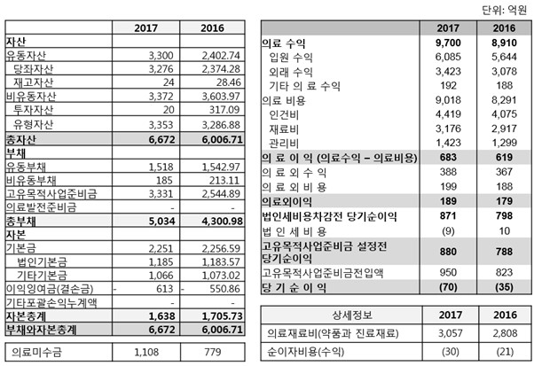
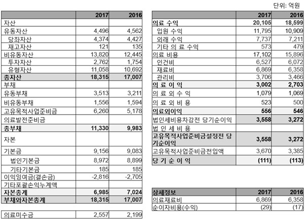

재무제표에 있는 방대한 양의 재무 정보를 의사 결정에 효율적으로 이용하기 위해서는 필요한 정보를 추출하고 이의 의미를 판단하는 것이 필요하다. 예를 들면, 유동부채는 만기가 1년 이내에 도래하는 부채로 기업이 채무를 이행할 수 있는 능력을 평가하기 위해서는 부채 상환에 사용할 수 있는 자산이 충분한지 파악하여야 한다. 기업이 보유하고 있는 자산 중 비유동자산보다는 유동자산을 부채 상환에 사용할 가능성이 높다. 따라서, 채무 불이행 위험은 유동부채 대비 유동자산으로 평가 할 수 있다. 유동자산을 충분히 보유하지 못한 기업은 추가적인 차입, 주식 발행, 부동산과 같은 비유동자산의 처분 등으로 추가로 자금을 조달하지 못하면 재무적 곤경에 처하게 된다. 또 다른 예로, 어떤 기업의 매출이 꾸준히 성장하고 있지만 영업이익은 비례적으로 증가하지 않았다면, 이 기업은 경쟁의 심화 등으로 과거보다 수익성이 악화한 경우일 것이다. 수익성의 변화를 파악하기 위해서는 매출액 대비 영업이익률을 작년 대비 또는 경쟁 기업과 비교하는 것이 필요하다.
이 장에서는 기업의 재무상태와 경영성과를 분석하는 데 사용하는 가장 기본적인 분석 기법으로 재무비율 분석을 살펴본다. 재무비율 분석은 재무제표에 있는 기본적인 정보를 바탕으로 (주가 정보 등을 추가로 사용) 정형화된 비율을 계산하는데, 기업의 재무상태와 경영성과를 파악할 수 있는 기본 틀을 제공한다. 재무비율은 규모가 다른 기업을 비교하거나, 재무제표 구성요소의 변화, 전년 대비 각 항목의 변동 및 추세를 파악하는 데 유용하다.
3.1 표준화된 재무제표
표준화된 재무제표(standardized financial statements)는 재무상태표는 각 항목을 총자산 대비 비율로 표시하고, 손익계산서는 각 항목을 매출액 대비 비율로 표시한다. 표준화된 재무제표는 공통형 재무제표(common-size financial statements)라고도 하는데 규모가 다른 기업을 비교하거나 동일 기업의 시계열 상 성장률의 변화를 비교하는 데 사용한다.
예시: 다음은 미래기업의 요약 제무제표이다.1
| 재무상태표(12/31) | 20x3 | 20x2 | 20x1 | 20x0 |
|---|---|---|---|---|
| 자산 | ||||
| 유동자산 | 174,697 | 146,982 | 141,430 | 124,815 |
| 현금및현금성자산 | 30,341 | 30,545 | 32,111 | 22,637 |
| 단기금융자산 | 70,599 | 52,639 | 56,071 | 48,856 |
| 매출채권 | 33,868 | 27,696 | 24,279 | 25,168 |
| 재고자산 | 28,985 | 24,983 | 18,354 | 18,812 |
| 기타유동자산 | 10,905 | 11,119 | 10,615 | 9,342 |
| 비유동자산 | 164,660 | 154,770 | 120,745 | 117,365 |
| 자산총계 | 339,357 | 301,752 | 262,174 | 242,180 |
| 부채 | ||||
| 유동부채 | 69,082 | 67,175 | 54,704 | 50,503 |
| 매입채무 | 8,480 | 9,084 | 6,485 | 6,187 |
| 단기차입금 | 13,587 | 15,768 | 12,747 | 11,155 |
| 유동성장기부채 | 33 | 279 | 1,233 | 222 |
| 기타유동부채 | 46,982 | 42,045 | 34,239 | 32,939 |
| 비유동부채 | 22,522 | 20,086 | 14,507 | 12,617 |
| 부채총계 | 91,604 | 87,261 | 69,211 | 63,120 |
| 자본 | ||||
| 지배기업 소유주지분 | 240,069 | 207,213 | 186,424 | 172,877 |
| 비지배지분 | 7,684 | 7,278 | 6,539 | 6,183 |
| 자본총계 | 247,753 | 214,491 | 192,963 | 179,060 |
| 자본과부채총계 | 339,357 | 301,752 | 262,174 | 242,180 |
| 포괄손익계산서 | 20x3 | 20x2 | 20x1 | 20x0 |
|---|---|---|---|---|
| 수익 (매출액) | 243,771 | 239,575 | 201,867 | 200,653 |
| 매출원가 | 132,394 | 129,291 | 120,278 | 123,482 |
| 매출총이익 | 111,377 | 110,285 | 81,589 | 77,171 |
| 판매비와관리비 | 52,490 | 56,640 | 52,348 | 50,758 |
| 영업이익 | 58,887 | 53,645 | 29,241 | 26,413 |
| 이자수익 | 2,297 | 1,614 | 1,504 | 1,761 |
| 이자비용 | 675 | 655 | 588 | 777 |
| 기타 비용(이익) | (651) | (1,592) | (557) | 1,436 |
| 법인세비용차감전순이익 | 61,160 | 56,196 | 30,714 | 25,961 |
| 법인세비용 | 16,815 | 14,009 | 7,988 | 6,901 |
| 계속영업이익 | 44,345 | 42,187 | 22,726 | 19,060 |
| 중단영업이익 | - | - | - | - |
| 당기순이익 | 44,345 | 42,187 | 22,726 | 19,060 |
| 지배기업 소유주지분 | 43,891 | 41,345 | 22,416 | 18,695 |
| 비지배지분 | 454 | 842 | 310 | 366 |
| 기타포괄손익 | (12) | (5,502) | 1,991 | 76 |
| 총포괄손익 | 44,333 | 36,684 | 24,717 | 19,136 |
재무상태표는 총자산을 기준으로, 손익계산서는 매출액을 기준으로 다음과 같이 표준화 한다.
| 재무상태표(12/31) | 20x3 | 20x2 | 20x1 | 20x0 |
|---|---|---|---|---|
| 자산 | ||||
| 유동자산 | 51.48% | 48.71% | 53.94% | 51.54% |
| 현금및현금성자산 | 8.94% | 10.12% | 12.25% | 9.35% |
| 단기금융자산 | 20.80% | 17.44% | 21.39% | 20.17% |
| 매출채권 | 9.98% | 9.18% | 9.26% | 10.39% |
| 재고자산 | 8.54% | 8.28% | 7.00% | 7.77% |
| 기타유동자산 | 3.21% | 3.68% | 4.05% | 3.86% |
| 비유동자산 | 48.52% | 51.29% | 46.06% | 48.46% |
| 자산총계 | 100.00% | 100.00% | 100.00% | 100.00% |
| 부채 | ||||
| 유동부채 | 20.36% | 22.26% | 20.87% | 20.85% |
| 매입채무 | 2.50% | 3.01% | 2.47% | 2.55% |
| 단기차입금 | 4.00% | 5.23% | 4.86% | 4.61% |
| 유동성장기부채 | 0.01% | 0.09% | 0.47% | 0.09% |
| 기타유동부채 | 13.84% | 13.93% | 13.06% | 13.60% |
| 비유동부채 | 6.64% | 6.66% | 5.53% | 5.21% |
| 부채총계 | 26.99% | 28.92% | 26.40% | 26.06% |
| 자본 | ||||
| 지배기업 소유주지분 | 70.74% | 68.67% | 71.11% | 71.38% |
| 비지배지분 | 2.26% | 2.41% | 2.49% | 2.55% |
| 자본총계 | 73.01% | 71.08% | 73.60% | 73.94% |
| 자본과부채총계 | 100.00% | 100.00% | 100.00% | 100.00% |
| 포괄손익계산서 | 20x3 | 20x2 | 20x1 | 20x0 |
|---|---|---|---|---|
| 수익 (매출액) | 100.00% | 100.00% | 100.00% | 100.00% |
| 매출원가 | 54.31% | 53.97% | 59.58% | 61.54% |
| 매출총이익 | 45.69% | 46.03% | 40.42% | 38.46% |
| 판매비와관리비 | 21.53% | 23.64% | 25.93% | 25.30% |
| 영업이익 | 24.16% | 22.39% | 14.49% | 13.16% |
| 이자수익 | 0.94% | 0.67% | 0.75% | 0.88% |
| 이자비용 | 0.28% | 0.27% | 0.29% | 0.39% |
| 기타 비용(이익) | (0.27%) | (0.66%) | (0.28%) | 0.72% |
| 법인세비용차감전순이익 | 25.09% | 23.46% | 15.21% | 12.94% |
| 법인세비용 | 6.90% | 5.85% | 3.96% | 3.44% |
| 계속영업이익 | 18.19% | 17.61% | 11.26% | 9.50% |
| 중단영업이익 | - | - | - | - |
| 당기순이익 | 18.19% | 17.61% | 11.26% | 9.50% |
| 지배기업 소유주지분 | 18.01% | 17.26% | 11.10% | 9.32% |
| 비지배지분 | 0.19% | 0.35% | 0.15% | 0.18% |
| 기타포괄손익 | 0.00% | (2.30%) | 0.99% | 0.04% |
| 총포괄손익 | 18.19% | 15.31% | 12.24% | 9.54% |
표준화된 재무제표는 재무제표 항목을 총자산과 매출액 대비 비율로 계산을 하는 방법 (vertical analysis) 외에 직전 회계연도 대비 증감을 비율로 계산하는 방법(horizontal analysis)도 있다.
| 재무상태표(12/31) | 20x3 | 20x2 | 20x1 |
|---|---|---|---|
| 자산 | |||
| 유동자산 | 18.86% | 3.93% | 13.31% |
| 현금및현금성자산 | -0.67% | -4.88% | 41.86% |
| 단기금융자산 | 34.12% | -6.12% | 14.77% |
| 매출채권 | 22.28% | 14.07% | -3.53% |
| 재고자산 | 16.02% | 36.12% | -2.44% |
| 기타유동자산 | -1.92% | 4.75% | 13.63% |
| 비유동자산 | 119.27% | 28.18% | 2.88% |
| 자산총계 | 12.46% | 15.10% | 8.26% |
| 부채 | |||
| 유동부채 | 2.84% | 22.80% | 8.32% |
| 매입채무 | -6.65% | 40.07% | 4.81% |
| 단기차입금 | -13.83% | 23.70% | 14.27% |
| 유동성장기부채 | -88.02% | -77.40% | 456.46% |
| 기타유동부채 | 11.74% | 22.80% | 3.95% |
| 비유동부채 | 356.07% | 38.45% | 14.98% |
| 부채총계 | 4.98% | 26.08% | 9.65% |
| 자본 | |||
| 지배기업 소유주지분 | 15.86% | 11.15% | 7.84% |
| 비지배지분 | 5.58% | 11.31% | 5.75% |
| 자본총계 | 15.51% | 11.16% | 7.76% |
| 자본과부채총계 | 12.46% | 15.10% | 8.26% |
| 포괄손익계산서 | 20x3 | 20x2 | 20x1 |
|---|---|---|---|
| 수익(매출액) | 1.75% | 18.68% | 0.60% |
| 매출원가 | 2.40% | 7.49% | -2.60% |
| 매출총이익 | 0.99% | 35.17% | 5.72% |
| 판매비와관리비 | -7.33% | 8.20% | 3.13% |
| 영업이익 | 9.77% | 83.46% | 10.70% |
| 이자수익 | 42.31% | 7.31% | -14.58% |
| 이자비용 | 3.05% | 11.39% | -24.32% |
| 기타 비용(이익) | -59.11% | 185.82% | -138.01% |
| 법인세비용차감전순이익 | 8.83% | 82.97% | 18.31% |
| 법인세비용 | 20.03% | 75.39% | 15.75% |
| 계속영업이익 | 5.12% | 85.63% | 19.23% |
| 중단사업이익 | - | - | - |
| 당기순이익 | 5.12% | 85.63% | 19.23% |
| 지배기업 소유주지분 | 6.16% | 84.45% | 19.90% |
| 비지배지분 | -46.09% | 171.29% | -15.07% |
| 기타포괄손익 | -99.78% | -376.30% | 2517.82% |
| 총포괄손익 | 20.85% | 48.42% | 29.17% |
20x0년을 기준 연도로 하여 연간 증감 비율을 계산하면 다음과 같다.
| 재무상태표(12/31) | 20x3 | 20x2 | 20x1 | 20x0(기준연도) |
|---|---|---|---|---|
| 자산 | ||||
| 유동자산 | 11.86% | 8.52% | 13.31% | 124,815 |
| 현금및현금성자산 | 10.26% | 16.16% | 41.86% | 22,637 |
| 단기금융자산 | 13.06% | 3.80% | 14.77% | 48,856 |
| 매출채권 | 10.40% | 4.90% | -3.53% | 25,168 |
| 재고자산 | 15.50% | 15.24% | -2.44% | 18,812 |
| 기타유동자산 | 5.29% | 9.10% | 13.63% | 9,342 |
| 자산총계 | 11.90% | 11.62% | 8.26% | 242,180 |
| 부채 | ||||
| 유동부채 | 11.01% | 15.33% | 8.32% | 50,503 |
| 매입채무 | 11.08% | 21.17% | 4.81% | 6,187 |
| 단기차입금 | 6.79% | 18.89% | 14.27% | 11,155 |
| 유동성장기부채 | -46.79% | 12.14% | 456.46% | 222 |
| 기타유동부채 | 12.57% | 12.98% | 3.95% | 32,939 |
| 비유동부채 | 21.31% | 26.17% | 14.98% | 12,617 |
| 부채총계 | 13.22% | 17.58% | 9.65% | 63,120 |
| 자본 | ||||
| 지배기업 소유주지분 | 11.57% | 9.48% | 7.84% | 172,877 |
| 비지배지분 | 7.51% | 8.49% | 5.75% | 6,183 |
| 자본총계 | 11.43% | 9.45% | 7.76% | 179,060 |
| 자본과부채총계 | 11.90% | 11.62% | 8.26% | 242,180 |
| 포괄손익계산서 | 20x3 | 20x2 | 20x1 | 20x0(기준연도) |
|---|---|---|---|---|
| 수익(매출액) | 0.58% | 8.94% | 0.60% | 200,653 |
| 매출원가 | 0.79% | 3.68% | -2.60% | 123,482 |
| 매출총이익 | 0.33% | 16.26% | 5.72% | 77,171 |
| 판매비와관리비 | -2.50% | 4.02% | 3.13% | 50,758 |
| 영업이익 | 3.16% | 35.45% | 10.70% | 26,413 |
| 이자수익 | 12.48% | 3.59% | -14.58% | 1,761 |
| 이자비용 | 1.01% | 5.54% | -24.30% | 777 |
| 기타 비용(이익) | -25.78% | 69.06% | 138.79% | 1,436 |
| 법인세비용차감전순이익 | 2.86% | 35.27% | 18.31% | 25,961 |
| 법인세비용 | 6.27% | 32.43% | 15.75% | 6,901 |
| 계속영업이익 | 1.68% | 36.25% | 19.23% | 19,060 |
| 중단영업이익 | - | - | - | - |
| 당기순이익 | 1.68% | 36.25% | 19.23% | 19,060 |
| 지배기업 소유주지분 | 2.01% | 35.81% | 19.90% | 18,695 |
| 비지배지분 | -18.62% | 64.71% | -15.07% | 366 |
| 기타포괄손익 | -86.95% | -93.98% | 2,517.82% | 76 |
| 총포괄손익 | 6.52% | 21.83% | 29.17% | *19,136** |
3.2 재무비율(Financial Ratios)
재무제표분석에서 사용하는 재무비율은 유동성비율, 활동성비율, 수익성비율, 부채감당비율 등으로 구분할 수 있다.
유동성비율 (Liquidity Ratio)
유동비율 (current ratio)
당좌비율 (quick ratio or acid-test ratio)
활동성비율 (Activity Ratio)
총자산회전율 (asset turnover)
매출채권회전율 (accounts receivable turnover) 또는 평균매출채권 회수기간 (average collection period in days or days sales outstanding(DSO))
재고자산회전율 (inventory turnover) 또는 평균재고보유기간 (days in inventory or days inventory outstanding(DIO))
매입채무회전율 (accounts payable turnover) 또는 평균매입채무지급기간 (average payment period in days or days payable outstanding(DPO))
영업순환기간 (operating cycle in days)
현금전환주기 (cash conversion cycle in days) 또는 순영업순환기간(net operating cycle)
수익성비율 (Profitability Ratio)
매출총이익률 (gross profit or margin ratio)
매출영업이익률 (operating profit ratio)
매출순이익률 (net profit margin ratio)
자기자본수익률 (return on equity)
총자산수익률 (return on assets)
주당순이익 (earnings per share)
배당성향 (dividend payout ratio)
배당수익률 (dividend yield)
부채감당비율 (Solvency Ratio)
부채비율 (debt-to-equity ratio) 또는 레버리지비율 (leverage ratio or debt-to-asset ratio) 또는 자기자본비율 (equity-to-asset ratio)
이자보상비율 (times interest earned)
3.2.1 유동성비율 (Liquidity Ratios)
유동성비율은 유동부채 또는 단기 채무를 상환할 수 있는 능력을 평가한다. 유동성 자산은 현금과 현금으로의 전환이 상대적으로 용이한 자산(현금성자산과 단기금융자산), 판매가 이루어지면 현금 유입이 예상되는 재고자산 등으로 이는 유동부채(예를 들면, 매입채무, 미지급임금, 미지급비용)와 곧 만기가 도래하는 단기채무의 상환에 사용할 수 있는 자산을 가리킨다.
- 유동비율 (current ratio): 유동자산/유동부채. 유동자산이 유동부채보다 많아야 추가적인 자금조달 없이 만기가 일 년 이내에 도래하는 부채를 상환할 수 있다. 유동비율은 1 이상이 되어야 한다. 유동비율 대신 순운전자본(working capital, 유동자산 – 유동부채)을 유동성 수준을 가늠하기 위해 사용하기도 한다. 순운전자본이 양수(+)인 경우에는 유동비율이 일 보다 크게 된다.
\[\textrm{유동비율 > 1 ⇔ 순운전자본 > 0}\]
당좌비율 (quick ratio or acid-test ratio): 당좌자산/유동부채. 당좌비율은 유동비율에 비해 보다 보수적으로 기업이 단기부채를 상환할 수 있는 능력을 측정한다. 당좌자산은 유동자산 중 환금성이 높은 자산으로 현금, 단기금융자산, 매출채권 등을 포함한다. 당좌자산에 재고자산은 포함되지 않는다. 재고자산을 현금으로 전환하기 위해서는 우선 판매가 되어야 하고, 외상매출의 경우 회수하는 데 추가로 시간이 걸린다. 따라서, 당좌자산에는 유동자산 중 현금화하는 데 상당한 시간이 소요되는 모든 항목을 제외한다. 재고자산뿐만 아니라 선급비용과 같이 현금으로 전환할 수 없는 항목 등도 당좌비율 계산에서 제외하는 것이 타당할 것이다.
당좌자산에 어떤 항목을 포함할 지는 분석자가 판단을 하여야한다. 세무보고 목적 등에 사용하는 양식화된 재무상태표에서는 재고자산을 제외한 모든 유동자산을 당좌자산으로 분류하기도 한다. 간편법으로 기업이 유동성 순서로 자산을 보고하는 경우, 현금과현금성자산, 단기금융자산, 매출채권 까지를 당좌자산으로 분류하고 재고자산과 그 이후에 보고하는 항목 들은 현금으로 전환되기 까지 시간이 걸리거나 용이하지 않은 경우가 많으므로 당좌자산에서 제외한다. 그러나, 미수금과 같은 비영업채권, 법인세 환급금 등은 당좌자산에 포함할 수도 있다.
\[\textrm{당좌자산 = 현금과현금성자산 + 단기금융자산 + 매출채권}\]
3.2.2 활동성비율 (Activity Ratios)
활동성비율은 기업이 자산을 얼마나 효율적으로 영업에 활용하는지 평가한다. 활동의 지표로는 매출(영업수익)을 사용한다. 2
총자산회전율 (asset turnover): 매출/평균총자산. 매출을 달성하기 위해 투자한 금액 (자산)을 평가하는 것으로, 효율적인 기업은 총자산회전율이 높다. 예를 들면, 기업 갑과 을의 연간 매출액은 200억으로 동일하다. 그런데, 갑은 총자산 50억을 사용하고, 을은 100억을 사용한다고 하면, 갑과 을의 총자산회전율은 각각 4와 2가 된다. 갑이 을보다 효율적으로 자산을 활용하고 있다고 평가할 수 있다.
매출채권회전율 (accounts receivable turnover)또는 평균매출채권회수기간 (average collection period in days): 신용매출액/평균매출채권. 평균매출채권은 상세한 정보가 없는 경우가 일반적이므로 당기와 전기의 순매출채권을 더해서 2로 나눈 수치를 평균매출채권액으로 간주한다. 평균매출채권회수기간은 365일(1년)을 매출채권회전율으로 나누어서 계산한다. 즉, 매출채권회전율이 14라고 하면 평균매출채권회수기간은 26.07 (=365/14)일이 된다. 즉, 매출이 일어난 후 수금하기 까지 대략 26일이 걸린다. 분자에 신용매출액을 사용해야 하나, 대부분의 기업이 이를 따로 공시하지 않으므로, 매출 총액을 사용한다. 현금매출은 신용매출이 일어난 후에 대금 회수가 바로 일어난 것으로 볼 수 있다. 따라서, 현금 매출비중이 높은 회사의 경우에는 매출채권회전율이 높게 계산된다. 회사에 따라 매출채권과 다른 비영업채권(미수금 등)을 구분하여 공시하지 않는 경우가 있다. 비영업채권을 매출채권에 포함하여 회전율을 계산하면 매출채권회전율이 낮게 계산된다.
재고자산회전율 (inventory turnover)또는 평균재고보유기간 (days in inventory): 매출원가/평균재고자산. 평균재고보유기간은 365일를 재고자산회전율로 나누어 계산한다. 분자에 매출액 대신에 매출원가를 사용한다. 재고자산이 원가로 표시되어 있으므로, 분자에 매출액의 원가에 해당하는 매출원가를 사용하는 것이 논리적이다. 다른 조건이 동일하다면, 재고자산회전율이 높은 기업은 재고자산을 효율적으로 관리하여 상대적으로 재고자산을 적게 보유한다. 재고자산관리와 관련하여 Just-in-time 재고관리기법을 채택한 기업의 경우 재고 보유를 최소 한도로 유지하므로, 재고자산회전율이 높게된다. 델컴퓨터와 같이 미리 생산을 하지않고 고객의 주문을 받은 후에 생산을 시작하는 경우에는 재고자산을 많이 보유하고 있지 않아서 재고자산회전율이 높다.
매입채무회전율 (accounts payable turnover) 또는 평균매입채무지급기간 (average payment period in days): 신용매입액/평균매입채무. 신용매입액이 따로 공시되지 않으므로 매입액을 분자로 사용하는 것이 일반적이다. 매입금액 또한 따로 공시가 되지 않으므로 매출원가에 재고자산의 변동금액을 합하여 추론한다. 매입관련 신용을 사용하는 기간이 길수록 매입채무회전율은 낮아진다. 평균매입채무지급기간은 365일(1년)을 매입채무회전율로 나누어서 계산한다. 기업의 입장에서 매입관련 신용은 금융기관 차입금을 줄일 수 있으므로 현금흐름에 도움이 된다.
\[\textrm{매입금액 = 매출원가 + 재고자산 증가액}\]
영업순환주기 (operating cycle): 재고자산의 구입 시점부터 판매와 현금 회수까지 걸리는 기간으로, 재고보유기간에 매출채권회수기간을 가산하여 계산한다.
\[\textrm{영업순환주기 = 재고보유기간 + 매출채권회수기간}\]
예를 들면, 상품을 구매한 후 판매하기 까지 평균 90일이 소요되고, 매출채권의 회수에 45일이 걸린다면, 영업순환주기는 135일이 된다.
현금전환주기 (cash conversion cycle in days) 또는 순영업순환주기 (net operating cycle in days): 재고 구입과 관련된 구매 대금을 현금으로 지급하는 시점부터 재고를 판매하고 회수하는 데 걸리는 기간.
\[\textrm{현금전환주기 = 재고보유기간 + 매출채권회수기간 - 매입채무지급기간}\]
앞의 예와 마찬가지로, 신용으로 재고를 구입 후 판매하기 까지 평균 90일이 소요되고, 매출채권의 회수에 45일이 걸린다. 매입채무는 평균 30일 이내에 지급한다고 하면, 순영업순환주기는 75일이 된다. 매출 관련 고객에세 45일의 신용을 제공하고 매입 관련 공급자로부터 30일의 신용을 제공 받고 있어서, 현금전환소요기간은 영업순환주기에 비해 매입채무지급기간 만큼 짧게 된다. 현금전환주기 또는 순영업순환주기가 길면 자금이 재고에 묶이게 되어 기업에게 부담이 된다.
3.2.3 수익성비율 (Profitability Ratio)
매출총이익률 (gross profit or margin ratio): 매출총이익/매출액. 매출총이익은 매출액에서 매출원가를 차감한 금액으로 기업이 영업이익을 거두기 위해서는 반드시 양수가 되어야 한다.
(매출) 영업이익률 (operating profit ratio): 영업이익/매출액. 영업이익은 매출총이익에서 판매비와 일반관리비를 차감한 금액이다. 영업이익에서 이자비용 등이 추가로 차감되므로 이익을 보고하기 위해서는 충분한 영업이익을 벌어야 한다. 영업이익률은 세전 이익을 기반으로 하고 있다. 가치평가 등에서는 세후영업이익(NOPAT, net operating profit after tax) 또는 조정세후영업이익(NOPLAT, net operating profit less adjusted tax)을 사용하여 영업이익률을 계산하기도 한다. 3
(매출) 순이익률 (net profit margin ratio): 순손익/매출액. 순손익은 손익계산서상의 당기순손익을 주로 사용한다. 당기순손익 대신 포괄손익을 사용하거나 세전이익을 사용하기도 한다. 중단영업을 제외한 계속영업이익을 사용하기도 한다. 지배주주의 입장에서 비지배주주지분을 제외하기도 한다.
자기자본수익률 (return on equity): 순손익/평균자기자본. 순손익은 손익계산서상의 당기순손익을 주로 사용한다. 이 경우에는 자기자본도 총금액을 사용한다. 만일 순손익을 지배주주귀속분(또는 보통주 귀속분)만을 대상으로 하는 경우, 분모의 자기자본도 비지배주주지분을 차감한 지배주주지분(보통주지분)을 사용하여야 논리적인 일관성을 유지할 수 있다.
총자산수익률 (return on assets): 세후영업이익/평균자산총액. 분모인 총자산은 자본조달 방법에 영향을 받지 않으므로, 분자에도 자본조달 방식에 영향을 받지 않는 영업이익을 사용하는 것이 논리적이다. 영업이익은 세금효과를 고려한 세후금액을 사용할 수 있다. 세후영업이익은 손익계산서에 보고된 (세전)영업이익에서 세금효과를 차감하여 구한다. 분자에 순이익이나 세금이자차감전 이익(EBIT, earnings before interest and tax)을 사용하기도 한다. 분모인 자산도 총자산 대신 순영업용자산을 대상으로 할 수 있다. 순영업용자산은 영업자산에서 영업부채를 차감한 금액이다. 총자산에서 비영업용 금융자산투자액과 총차입금을 차감하여 계산할 수 있다. 순영업용자산은 자본조달의 측면에서 순자산(자기자본)에 순차입금을 가산한 금액과 동일하다.4
주당순이익 (earnings per share): 회사가 손익계산서에서 보고한 주당순이익. 주당순이익은 연결재무제표의 경우 비지배주주지분과 지배회사의 우선주지분을 제외한 지배회사의 보통주에 귀속되는 당기손익을 가중평균유통보통주 숫자로 나누어 계산한다. 가중평균유통보통주 정보는 주석에서 확인할 수 있다. 기중에 신주를 발행하였거나 자사주 등을 취득한 경우에는 기말 주식수와 가중평균주식수가 차이가 나게 된다.
배당성향 (dividend payout ratio): 현금배당/이익. 현금배당에는 당기에 배당할 금액을 보통 포함한다.5 ,배당성향은 당기 이익 중 얼마를 배당하는가이다. 배당성향이 높은 기업과 낮은 기업은 성장성이나 재무상태가 다르다. 성장기의 기업은 투자소요액이 많아 주주에게 배당을 하기 보다는 사내유보를 할 가능성이 높아서 배당성향이 낮다. 이익은 일반적으로 당기순이익을 사용한다. 비지배주주지분이 있는 경우 이를 제외한 당기순이익을 사용하기도 한다. 기타포괄손익 항목은 배당의 대상이 아니므로 포괄손익을 사용하는 경우는 드물다.
- 배당수익률 (dividend yield) 또는 시가배당율: 현금배당액/주가. 주가는 보고기간 말 주식의 종가로, 배당락 전 마지막 주 평균 가격을 사용한다.6 현금배당액은 최근 1년간의 총 배당 금액으로 중간배당을 하는 경우에는 이도 포함한다. 경우에 따라서는 연말배당만을 대상으로 하기도 한다. 배당수익률은 배당성향과 동일하게 분자로 배당금액을 사용한다. 하지만 분모로 배당수익률은 자본의 시장가치를 사용하고, 배당성향은 당기 이익을 사용한다. 자본수익률과 배당수익률을 합하면 대략 (총)주가수익률과 유사하게 된다: (총)주가수익률 = (주식가격 변화분 + 배당액)/기초주가. 주가수익률을 계산할 때는 배당수익률 계산에서 기초 금액을 사용하여야 한다.
3.2.4 부채감당비율 (Solvency Ratios)
부채감당비율은 기업이 자본을 조달하는 데 (장기) 차입에 의존하는 정도와 차입에 수반되는 이자비용을 영업이익에서 감당할 수 있는지 평가한다.
부채비율 (debt-to-equity ratio or gearing ratio), 레버리지비율 또는 타인자본비율 (leverage ratio or debt-to-asset ratio) 또는 자기자본비율 (equity-to-asset ratio): 부채/자본 또는 부채/자산. 분자에는 재무상태표상의 부채 총액을 주로 사용하나, 순차입금을 사용하기도 한다. 순차입금 (또는 순재무부채)는 차입금(재무부채)에서 비영업용 재무자산을 차감한 금액이다. 비영업용 재무자산에는 현금및현금성자산과 단기금융자산에 대한 투자를 포함하지만, 현금및현금성 자산만을 차감하기도 한다. 분모로는 재무상태표상의 자본총액 또는 자산총액을 사용한다. 자산총액은 자기자본과 타인자본의 합이므로 총자본으로 부르기도 한다. 자산총액대신 자기자본과 순채무의 합으로 정의된 총자본을 사용하기도 한다. 부채관련비율은 기업이 조달한 총자본(자기자본과 타인자본의 합) 중 차입으로 조달한 금액 또는 자기자본 대비 총자본의 비중으로 기어링비율(gearing ratio)로 불리기도 한다.7 규제당국은 부채의 과다여부를 판단하는데 부채비율 200%를 사용하는 경우가 있다. 금융위원회에서는 상장회사 중 부채비율 200%가 넘고 동종업종 평균 부채비율의 150%를 넘고, 아래에서 설명하는 이자보상배율(영업이익/이자비용)이 1 미만인 기업은 외부감사인을 강제로 지정한다.
(순)이자보상비율 (times interest earned): 세금이자차감전이익/순이자비용. 순이자비용은 이자비용에서 이자수익을 차감하여 계산한다. 이자세금차감전이익(EBIT)은 세전이익(income before tax)에 순이자비용을 가산하여 구할 수 있다. 간편법으로 이자세금차감전이익 대신에 영업이익을 EBIT의 대용치로 사용하는 경우도 있는데, 영업이익과 세전이익 사이에 이자비용과 이자수익 이외의 다른 항목이 많은 경우에는 영업이익을 사용하여 계산한 비율과 EBIT를 사용하여 계산한 비율이 상당히 다르다. 분모에도 순이자비용대신 이자수익을 차감하지 않은 이자비용을 사용하기도 한다. 이자보상비율이 1이하인 경우에는 영업에서 벌어들인 이익으로 이자비용을 감당할 수 없는 경우로 지급불이행의 위험이 높다고 볼 수 있다. 영업에서 손실이 나는 경우에는 이자보상비율이 음수가 된다.
재무비율 활용시 유의점
타인이 계산한 재무비율을 사용하는 경우 재무비율이 어떻게 계산되었는지 확인하는 것이 중요하다. 같은 이름의 재무비율이라도 계산에서 사용한 항목이 다른 경우가 많다. 예를 들면, 총자산수익률의 경우 분자에 당기순이익(profit)대신 영업이익, 이자세금차감전이익(EBIT), 세후영업이익을 사용하는 경우가 있다. 영업이익을 사용하는 논리는 기업이 가지고 있는 자산을 활용하여 창출한 이익은 자본조달 방법과 무관하므로, 이자비용을 차감하기 전의 영업이익이 타당하기 때문이다. 즉, 타인자본을 사용하는 정도가 다르더라도 영업용자산이 동일하다면 당기순이익은 다르지만 영업이익은 비슷하기 때문이다. 이 뿐만 아니라 분자에 순이익 대신에 포괄손익 (comprehensive income) 또는 비지배주주지분을 제외한 이익, 즉 모기업주주 또는 지배주주귀속 이익 (profit attributable to the owner of the parent)을 사용할 수도 있다. 부채비율의 경우에도 재무상태표의 부채 (liabilities)대신에 차입금(debt) 또는 순차입금을 사용하는 경우도 있다. 차입금을 분자로 사용하는 경우에는 매입채무나 순확정급여부채 등은 제외된다.
한국은행에서는 매년 “기업경영분석” 보고서를 발간한다. 2012년 11월에 발간한 보고서는 2011년 615,316개의 기업이 법인세신고서에 첨부한 재무제표를 토대로 재무비율 정보를 제공하고 있다. 금융업을 제외한 제조업에 종사하는 영리법인의 정보를 업종별, 규모별로 제공하고 있다. 이 정보를 사용할 때도 재무비율의 산식을 검토하여야 한다. 예를들면, 당좌자산을 유동자산 중 재고자산을 제외한 금액으로 정의하고 있다. 따라서, 이 당좌자산의 정의에는 미수금, 선급비용 등이 포함되어 있다. 재고자산회전율도 매출원가가 아닌 매출액을 사용하여 계산한다. 또한, 법인세 신고서에 첨부된 재무제표를 대상으로 재무비율을 계산하고 있으므로 연결기준이 아니다. 따라서, “기업경영분석”보고서의 재무비율을 참고할 때는 이러한 차이점을 고려하여 판단하여야 한다.
예시: 재무비율 계산 (한미약품)
재무상태와 경영성과를 간단히 설명하기 위해, 사업보고서나 영업보고서에 재무비율을 보고하는 기업이 있다. 다음은 한미약품이 2017년 사업보고서의 “이사의 경영진단 및 분석의견”에서 제시한 재무비율이다.
| 구분 | 2017 년 | 2016 년 | 비고 |
|---|---|---|---|
| 유동비율 | 102.96% | 154.51% | 유동자산/유동부채 |
| 부채비율 | 109.60% | 117.42% | 부채총계/자기자본 |
| 영업이익률 | 8.96% | 3.03% | 영업이익/매출액 |
| 자기자본순이익률 | 8.70% | 4.13% | 당기순이익/자기자본 |
| 매출액증가율 | 3.84% | -33.00% | 당기매출/전기매출 |
| 매출채권회전일 | 100일 | 105일 | 365/(매출액/매출채권) |
| (*) 자산, 부채, 자본, 매출채권: 당기말, 전기말 잔액의 평균. |
유동비율이 100%를 초과하고, 부채비율도 200%이하여서, 유동성과 부채수준은 적정한 것으로 판단된다. 영업이익률은 2016년에 상당히 악화되었는데, 매출액이 감소한 것과 연관이 있을 것으로 사료된다. 2017년 매출채권회전일(평균회수기간)은 100일로 매출 이후 대략 3개월 10일 이후에 회수가 된다. 2016년에 비해 매출채권의 회수일이 5일 줄어들었는데 매출채권 회수가 더 빨라졌다. 하지만, 2017년 영업이익률은 8.96%로 20x1년의 3.03% 비해 향상되었다.
다음은 미래기업의 재무비율을 계산한 결과이다.8
| 미래기업 재무비율 | 20x3 | 20x2 | 20x1 | 20x0 |
|---|---|---|---|---|
| 유동성비율 (Liquidity) | ||||
| 유동비율(Current ratio) | 2.529 | 2.188 | 2.585 | 2.471 |
| 당좌비율(Acid-test ratio) | 1.951 | 1.651 | 2.056 | 1.914 |
| 활동성비율 (Activity) | ||||
| 총자산회전율(Asset turnover) | 0.760 | 0.850 | 0.800 | N/A |
| 매출채권회전율(A/R turnover) | 7.919 | 9.219 | 8.165 | N/A |
| 매출채권회수기간(Avg Collection Period) | 46.090 | 39.593 | 44.703 | N/A |
| 재고자산회전율(Inventory Turnover) | 4.906 | 5.967 | 6.473 | N/A |
| 재고보유기간(Days in Inventory) | 74.393 | 61.172 | 56.392 | N/A |
| 매입채무회전율(A/P turnover) | 15.531 | 17.460 | 18.910 | N/A |
| 매입채무지급기간(Avg. Payment Period) | 23.501 | 20.904 | 19.302 | N/A |
| 영업순환주기(Operating Cycle) | 120.482 | 100.765 | 101.095 | N/A |
| 현금전환주기(Cash Conversion Cycle) | 96.982 | 79.861 | 81.794 | N/A |
| 수익성비율 (Profitability) | ||||
| 매출총이익률(GP margin) | 0.457 | 0.460 | 0.404 | 0.385 |
| 매출영업이익률(OP margin) | 0.242 | 0.224 | 0.145 | 0.132 |
| 매출영업이익률 (세후영업이익) | 0.175 | 0.168 | 0.107 | 0.097 |
| 매출순이익률(Net Profit margin) | 0.182 | 0.176 | 0.113 | 0.095 |
| 매출순이익률(계속사업이익) | 0.182 | 0.176 | 0.113 | 0.095 |
| 자기자본수익률(ROE) | 0.192 | 0.207 | 0.122 | N/A |
| 자기자본수익률 (지배주주이익) | 0.196 | 0.210 | 0.125 | N/A |
| 총자산수익률(ROA) | 0.138 | 0.150 | 0.090 | N/A |
| 총자산수익률 (세후영업이익) | 0.133 | 0.143 | 0.086 | N/A |
| 부채감당비율 (Solvency) | ||||
| 부채비율(Debt to equity) | 0.370 | 0.407 | 0.359 | 0.353 |
| 부채비율(Debt to total assets) | 0.270 | 0.289 | 0.264 | 0.261 |
| 이자보상비율(Times interest earned) | N/A | N/A | N/A | N/A |
미래기업의 경우 재무자산이 차입금보다 많아서 순이자비용 대신 순이자수익을 보고하고 있다. 따라서, 이자보상비율은 계산을 하지 않았다.
실습 1: 미래기업의 배당관련 배당성향과 배당수익률을 계산해보시오.
실습 2: 한 기업을 선정하여 재무비율을 계산하고 코멘트하시오.
3.3 연습문제 및 사례:
연습문제: 셀트리온의 2015년 사업년도 관련 다음 질문에 답하시오 (첨부한 재무제표와 주석정보 참조.)
빈칸 (ㄱ), (ㄴ), (ㄷ)를 채우시오.
매출채권회전율을 계산하시오.
매출채권평균회수기간을 계산하고 코멘트하시오
재고자산회전율을 계산하시오.
재고자산보유기간을 계산하고 코멘트하시오.
20x0 년 말 운전자본액과 유동비율을 계산하시오.
20x0년 말 당좌비율을 계산하시오.
이자보상비율을 계산하시오.
부채비율을 계산하시오.
현금과현금성자산에 대한 환율변동효과를 계산하시오.
다음을 파악하라.
- 수권주식수
- 발행주식수
- 유통주식수
2015년 주식배당율은 얼마인가?
셀트리온 재무제표와 주석에서 발췌한 정보 (단위: 백만원)
재무상태표 (12월 31일) 2015 2014 자산 유동자산 1,096,837 793,036 현금및현금성자산 149,926 108,752 단기금융자산 6,001 9,746 매출채권 662,226 378,290 기타수취채권 15,324 40,313 재고자산 233,766 223,617 기타유동자산 19,691 32,294 당기법인세자산 9,904 24 …… …… …… 부채 단기금융부채 540,503 404,084 매입채무 5,144 4,390 기타지급채무 60,705 75,955 당기법인세부채 42,743 5,827 기타유동부채 16,656 3,681 …… …… …… 자본 지배기업의 소유주에게 귀속되는 자본 1,694,234 1,247,394 납입자본 759,618 478,171 자본금 112,432 103,570 주식발행초과금 647,186 374,602 이익잉여금(결손금) 994,025 845,040 기타자본구성요소 (59,409) (75,817) 기타포괄손익누계액 8,512 3,436 기타자본 (67,922) (79,253) 비지배지분 (ㄱ) 100,387 자본총계 1,809,841 1,347,781 자본과부채총계 2,748,231 2,322,385 포괄손익계산서 2015 년 2014 년 매출액 603,413 471,046 매출원가 234,569 129,908 매출총이익 368,844 341,138 판매비와관리비 109,890 139,669 영업이익(손실) 258,954 201,469 순이자비용 …… …… …… 법인세비용차감전순이익 (ㄴ) 149,111 법인세비용 4,829 31,630 당기순이익 158,282 117,482 당기순이익(손실)의 귀속 0 0 지배기업의 소유주 154,090 112,676 비지배지분 (ㄷ) 4,805 …… …… …… 포괄손익 163,334 120,830 현금흐름표 2015 년 2014 년 영업활동현금흐름 77,567 145,159 투자활동현금흐름 (166,938) (106,338) 재무활동현금흐름 130,426 (11,318) 11. 관계기업투자
기업명 2015.1.1 취득 처분 배당금수취 지분법손익 2015.12.31 보스톤인큐베이션투자조합 1,557 - (205) - (636) 716 2014 성장사다리-IMM벤처펀드 1,927 7,590 (2,216) (770) 845 7,375 합계 3,484 7,590 (2,421) (770) 209 8,092 자본과 배당관련 공시
연결기업(셀트리온)의 발행할 주식 총수는 400,000,000주이고, 1주당 액면가액은 1,000원입니다. 2015년 말 현재 연결기업이 발행한 보통주 주식의 수는 112,431,663주이며, 자기주식으로 2015년 말 1,486,635주 (82,868,895주, 2014년 말)를 보유하고 있다.
2014년도 12월 31일로 종료하는 회계연도에 대한 주식배당금 5,105백만원(보통주 5,105,283주)은 2015년 3월 20일에 자본금으로 대체되어 보통주가 발행되었습니다.
사례연구 (의료기관의 재무분석): 다음은 고려대병원의 2017년 회계연도 (2018년 2월 종료)의 재무상태표, 손익계산서, 그리고 추가 정보이다 (참조 그림 3.1).

그림 3.1: 고려대병원 재무제표 의료기관은 비영리기관으로 배당을 할 수 없고, 고유목적사업준비금을 설정할 수 있다. 고유목적사업준비금은 향후 의료기관의 고유목적을 달성하기위해 의료설비의 구매, 연구개발비 등에 사용하기로 하고 손금으로 산입한 금액이다.
공통형 재무제표를 작성하시오.
추세분석을 위한 2017년 각 항목별 증감률을 계산하시오.
2017년 회계연도 비율분석을 수행하고, 평가를 하시오 (참조 표 3.1).
세브란스병원의 재무자료 (참조 그림 3.2)를 사용하여 비율분석을 실시하고 고려대병원과 비교하시오.
표 3.1: 고려대병원 비율분석 재무비율 2017 2016 평가 유동성 유동비율 2.17 1.56 당좌비율 2.16 1.54 수익성 의료이익률 0.07 0.07 순이익률(고유목적사업준비금제외) 0.09 0.09 순이익률(당기순이익) -0.01 -0.01 의료이익비율 0.78 0.78 의료외이익비율 0.22 0.22 활동성 총자산회전율 1.53 N/A 의료미수금회전율 10.17 N/A 회수기간 35.88 N/A 의료재고회전율 116.93 N/A 보유기간 3.12 N/A 부채감당비율 부채비율 3.07 2.52 레버리지비율 0.75 0.72 (순)이자보상비율 -23 -32 
그림 3.2: 세브란스병원 재무제표
기준연도(20x0)는 삼성전자 2015년. 단위: 10억 원.↩︎
Turnover는 회전율로 보통 번역을 하는데, “매출액”의 의미도 있다. Turnover is defined as “(a): the amount received in sales for a stated period (2) : the ratio of sales for a stated period to average inventory (3) : a cycle of purchase, sale, and replacement of a stock of goods.” (Merriam-Webster Dictionary).↩︎
NOPAT과 NOPLAT은 세무효과의 조정에서 차이가 난다. NOPLAT은 법인세비용 중 이연법인세를 제외한 당기법인세 비용 효과 만을 조정한다. 이연법인세 비용은 법인세비용 주석사항에서 확인할 수 있다. 재무상태표상에서 순이연법인세부채의 증가로 추론할 수 있다.↩︎
순영업용자산은 투하자본(invested capital)과 유사하다. 투하자본을 자기자본에 총차입금을 가산한 금액이라고 하면, 순영업용자산과 투하자본은 비영업용 금융자산투자액만큼 차이가 난다. 투하자본 계산에서 순차입금(총차입금에서 금융자산투자액을 차감)을 자기자본에 가산한 경우 순영업용자산과 동일하게 된다.↩︎
당기 배당은 12월 결산법인의 경우 다음 년도 3월 말 주주총회에서 확정이 되고, 실제 지급은 한 달 후인 4월 말 경에 이루어진다. 따라서, 실제 사업연도 기간동안 현금으로 지급한 배당금액은 배당성향 계산에서 사용하는 배당금액과 다르다.
한편, 배당성향의 역수(이익/현금배당)는 기업이 이익을 통해 배당을 지급할 능력을 측정하는 지표로 사용할 수 있다. 이는 배당보상비율(dividend coverage ratio 또는 dividend cover)이라고 불리기도 한다.↩︎
배당성향과 배당수익률은 엄밀하게는 수익성비율로 볼 수 없다. 기업의 과거와 현재에 벌어들인 이익을 주주에게 분배하는 것이므로 수익성과는 직접적인 연관성이 떨어지기 때문이다.
기업의 수익성을 평가하는데 회계이익대신에 현금흐름을 사용하기도 한다. 발생액을 사용하여 이익을 부풀리거나 축소한 기업이나, 회계이익과 영업현금흐름 사이에 괴리가 큰 기업의 경우에는 순이익과 더불어 현금흐름표의 영업현금흐름을 활용하는 것이 유용하다. 매출액순이익률과 유사하게 매출액영업현금흐름비율을 다음과 같이 계산할 수 있다.
\[\textrm{매출액영업현금흐름비율 = 영업현금흐름/매출액}\]
매출액영업현금흐름에서 이자지급액과 수취액 배당수취액(투자활동과 재무활동관련 항목) 등을 가감하면, 손익계산서의 세후 영업이익에 해당하는 영업활동에서 벌어들인 진정한 영업현금흐름을 추산할 수 있다.
영업현금흐름 대신 잉여현금흐름(free cash flow)를 사용하는 기업도 있다. 잉여현금흐름은 영업에서 벌어들인 현금에서 영업을 위해 투자한 금액을 차감한 금액으로 정의하는데, 영업현금흐름에서 자본적투자액(capital expenditure)을 차감하여 계산한다.
\[\textrm{잉여현금흐름 = 영업활동현금흐름 (C) - 자본적지출 (I)}\]
영업활동현금흐름에 포함되어 있는 투자와 재무활동 관련 현금흐름인 세후순이자지급액은 제외하는 것이 바람직하고, 자본적투자액에는 다른 회사의 지분에 대한 투자액, 무형자산에 대한 투자, 유무형자산의 매각으로 유입되는 현금 등은 추가로 고려하는 것이 필요하다.[^ratio_analysis-7]↩︎
“기어링은 기업의 자기자본 대비 차입한 금액 비율이다.” Gearing is “the amount a company has borrowed compared to its share capital.”, Cambridge Dictionary.↩︎
당좌비율과 매출채권회전율에는 매출채권만 포함하였고, 비매출 채권인 미수금은 포함하지 않았다. 주가는 재무제표가 공표된 후인 3월 말 주가를 사용하였다.↩︎